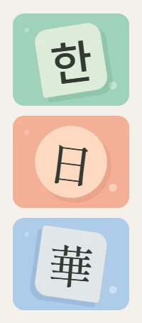

05 / LEARNING THROUGH PLAY
First Words.
A small start in another language.
Design & development · Learning experience

Meet it. Try it. Bring it back.
01 / 02I designed short learning moments that introduce a phrase, support a first attempt, and revisit it in a useful situation. There is room to pause and return.


Progress at your pace.
02 / 02Optional hints and natural stopping points keep practice approachable. Destination activities connect the words to the places in Wayfarer.
Pronunciation uses available device voices. Language content has had source-based checks; independent fluent-speaker and listening reviews remain pending.
TAKE A CLOSER LOOK
Try First Words Open destination practice ↗Next pocket storyLight & Form →